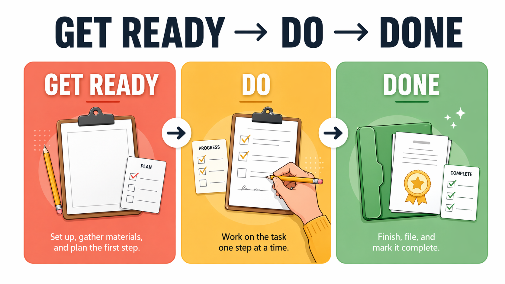
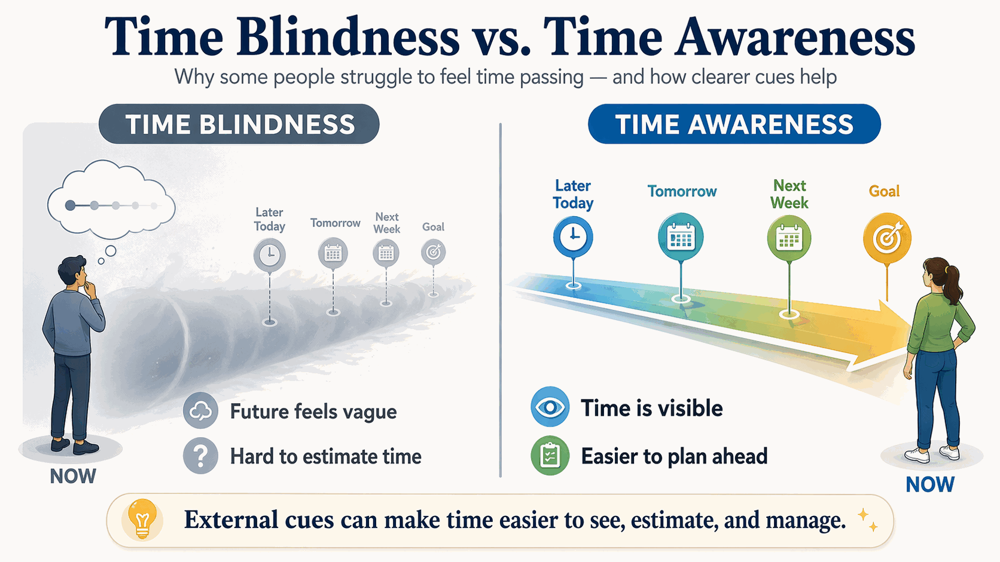
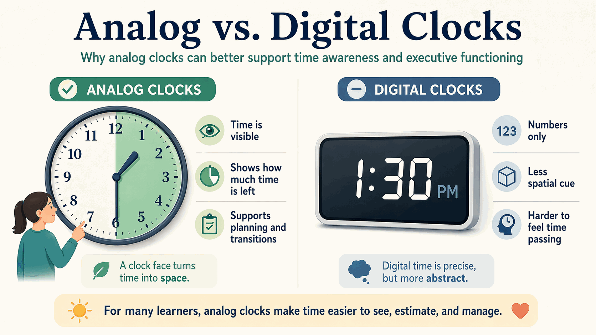
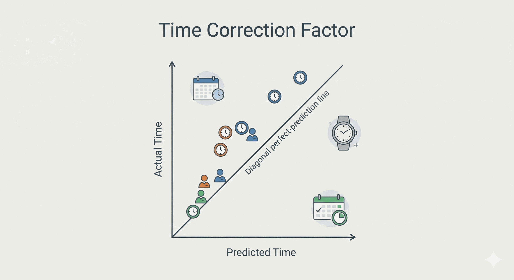
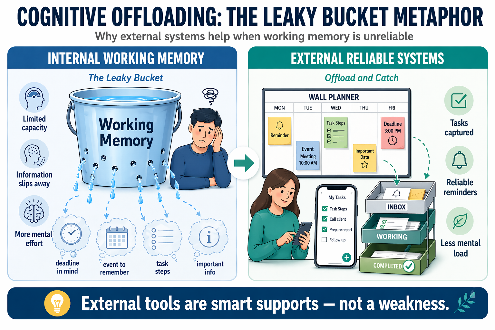
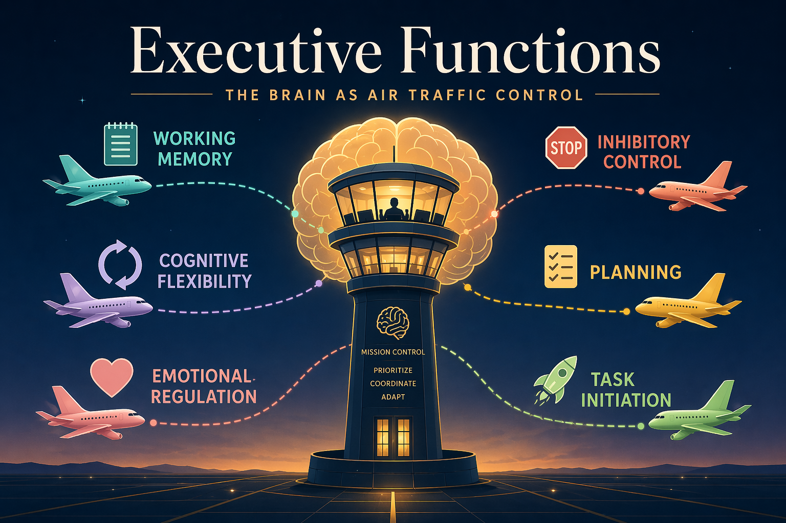

Applied Methodologies
Concrete tools for time and task management using the "360 Thinking" model, analog temporal strategies, and cognitive offloading techniques.
Module Overview
To provide concrete tools for time and task management, this module incorporates the "360 Thinking" model developed by Sarah Ward and Kristen Jacobsen. It moves beyond general lists to specific visual-spatial strategies.
Guiding Philosophy
This module addresses the most practical question in EF coaching: "How do I actually help someone who can't start, can't estimate time, and can't stay organized?" The answers lie in externalization — making the invisible visible.
360 Thinking: "Get Ready, Do, Done"
The primary methodology: planning backwards to execute forwards.
Step 1: Done
Visualize the final outcome first. "What will it look like when I am finished?" This utilizes the nonverbal working memory (visual imagery) identified by Barkley.
The client creates a mental photograph of the completed task. If they're packing for a trip, they visualize themselves at the airport with everything they need.
Step 2: Do
Once the end state is visualized, identify the specific action steps required. Map the work backward from the finished product to the present moment.
Break down the gap between "now" and "done" into concrete, observable steps. Each step should be small enough to not trigger anxiety.
Step 3: Get Ready
Finally, determine what materials are needed to start. This reverses the typical impulsive approach of grabbing materials without a plan.
Use Red/Green/Yellow planning mats to visually organize this process. Red = not ready, Yellow = getting ready, Green = go.

Temporal Management: Addressing "Time Blindness"
Addressing the inability to "feel" or "see" the passage of time.

The Problem
Clients with EF challenges often perceive time as a nebulous concept. They struggle to "feel" the passage of time or estimate how long tasks take. Barkley calls this "temporal myopia" — nearsightedness to time.
Digital clocks show a meaningless number. The brain needs to see time as a physical quantity that is disappearing.
Analog vs. Digital

Analog clocks show a "pie slice" of time that is physically shrinking. This visualizes the passage of time in a way digital displays cannot. Barkley advises replacing digital clocks with analog ones wherever possible.
The "Time Timer"
A specific tool (app or physical device) where a red disk vanishes as time elapses. Makes abstract time concrete and visible.

Prediction vs. Reality
A metacognitive exercise: the client predicts task duration ("Shower will take 10 mins") and then times it (Actual: 25 mins). This data creates a "Time Correction Factor" for future planning.
Backwards Planning
Starting from the deadline and working backward. "If the paper is due Friday at 5 PM, and you need 2 hours to proofread, you must finish writing by 3 PM."
Cognitive Offloading
Externalizing working memory through lists, voice memos, visual cues, and environmental design.
Write It Down Immediately
Clients are trained to stop trusting their brain to hold appointments and tasks. The rule: if it enters your mind, it enters your calendar or task list within 10 seconds.
Voice Memos
For clients who resist writing, voice recording captures thoughts in the moment. A quick voice note is better than a forgotten idea.
Visual Cues
Placing reminders at the "point of performance" — a note on the door, a sticky on the laptop, a checklist on the bathroom mirror.

Key Principle
Working memory is a "leaky bucket." The goal of cognitive offloading is not to improve the bucket, but to stop trying to carry water in a leaky bucket. External systems replace internal memory until internal systems strengthen.
From Technique to Daily Operating System
These methods become powerful when they are embedded in the actual systems people use every day, not when they remain isolated coaching concepts.

School and College Workflow
Backward planning, time visualization, and cognitive offloading help learners move from vague awareness to operational readiness.
- Map large assignments backward from the due date
- Turn LMS task lists into visible weekly action boards
- Use visual finish-line prompts before collecting materials
- Build "done looks like" routines for writing, packing, and studying
Home and Work Workflow
The same methods translate to adult life: preparing for meetings, organizing transitions, sequencing errands, and protecting against time drift in unstructured settings.
- Create startup and shutdown routines
- Use visible time tools for meals, departures, and deadlines
- Place cues at the point of performance instead of relying on recall
- Convert open-ended tasks into concrete "first visible step" actions
Unit Summary
| Unit | Focus | Key Tools |
|---|---|---|
| 4.1 | 360 Thinking (Ward) | "Get Ready, Do, Done" planning mats (Red/Green/Yellow) |
| 4.2 | Temporal Management | Analog clocks, Time Timers, backwards planning, Time Correction Factor |
| 4.3 | Cognitive Offloading | External lists, voice memos, visual cues at point of performance |
Practical Tools for Planning and Offloading
Practice Scenarios
Apply the methods in real situations. Each scenario asks you to choose between competing approaches. See which technique fits and why.
Want Implementation Feedback?
Module 4 teaches the methods. The paid path lets you submit your backward-planning templates, offloading system designs, and time-management protocols for expert scoring and written feedback.
See Applied Review Options